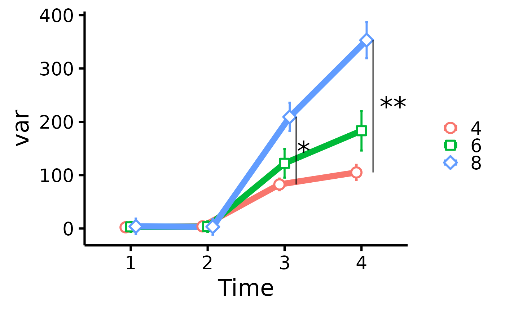
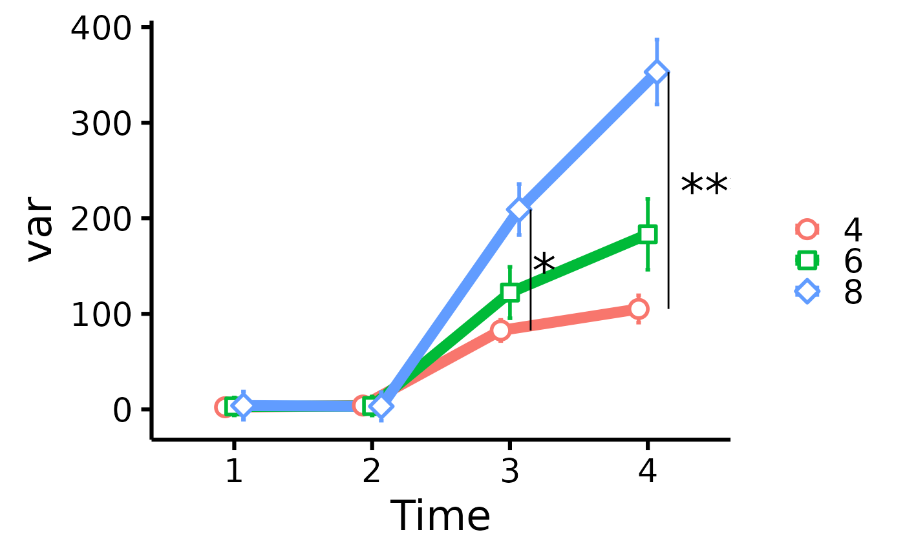

Easy scatter plots over multiple times (T1, T2, T3)
Source:R/plot_means_over_time.R
plot_means_over_time.RdMake nice scatter plots over multiple times (T1, T2, T3) easily.
Usage
plot_means_over_time(
data,
response,
group,
groups.order = "none",
error_bars = TRUE,
ytitle = NULL,
legend.title = "",
significance_stars,
significance_stars_x,
significance_stars_y,
significance_bars_x,
print_table = FALSE,
verbose = FALSE
)Arguments
- data
The data frame.
- response
The dependent variable to be plotted (e.g.,
c("variable_T1", "variable_T2", "variable_T3"), etc.).- group
The group by which to plot the variable
- groups.order
Specifies the desired display order of the groups on the legend. Either provide the levels directly, or a string: "increasing" or "decreasing", to order based on the average value of the variable on the y axis, or "string.length", to order from the shortest to the longest string (useful when working with long string names). "Defaults to "none".
- error_bars
Logical, whether to include 95% confidence intervals for means.
- ytitle
An optional x-axis label, if desired. If
NULL, will take the variable name of the first variable inresponse, and keep only the part of the string before an underscore or period.- legend.title
The desired legend title.
- significance_stars
Vetor of significance stars to display on the plot (e.g,.
c("*", "**", "***")).- significance_stars_x
Vector of where on the x-axis significance stars should appear on the plot (e.g.,
c(2.2, 3.2, 4.2)).- significance_stars_y
Vector of where on the y-axis significance stars should appear on the plot. The logic here is different than previous arguments. Rather than providing actual coordinates, we provide a list object with structure group 1, group 2, and time of comparison, e.g.,
list(c("group1", "group2", time = 2), c("group1", "group3", time = 3), c("group2", "group3", time = 4)).- significance_bars_x
Vector of where on the x-axis vertical significance bars should appear on the plot (e.g.,
c(2:4)).- print_table
Logical, whether to also print the computed table.
- verbose
Logical, whether to also print a note regarding the meaning of the error bars.
Details
Error bars are calculated using the method of Morey (2008) through
Rmisc::summarySEwithin(), but raw means are plotted instead of the normed
means. For more information, visit:
http://www.cookbook-r.com/Graphs/Plotting_means_and_error_bars_(ggplot2).
References
Morey, R. D. (2008). Confidence intervals from normalized data: A correction to Cousineau (2005). Tutorials in Quantitative Methods for Psychology, 4(2), 61-64. doi:10.20982/tqmp.04.2.p061
Examples
data <- mtcars
names(data)[6:3] <- paste0("T", 1:4, "_var")
plot_means_over_time(
data = data,
response = names(data)[6:3],
group = "cyl",
groups.order = "decreasing"
)
 # Add significance stars/bars
plot_means_over_time(
data = data,
response = names(data)[6:3],
group = "cyl",
significance_bars_x = c(3.15, 4.15),
significance_stars = c("*", "***"),
significance_stars_x = c(3.25, 4.5),
significance_stars_y = list(c("4", "8", time = 3),
c("4", "8", time = 4)))

# significance_stars_y: List with structure: list(c("group1", "group2", time))
# Add significance stars/bars
plot_means_over_time(
data = data,
response = names(data)[6:3],
group = "cyl",
significance_bars_x = c(3.15, 4.15),
significance_stars = c("*", "***"),
significance_stars_x = c(3.25, 4.5),
significance_stars_y = list(c("4", "8", time = 3),
c("4", "8", time = 4)))

# significance_stars_y: List with structure: list(c("group1", "group2", time))